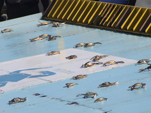

National Hard Crab Derby
Labor Day Weekend Sept. 3, 4, 5, 6, 2015
Somers Cove Marina
Crisfield's National Hard Crab Derby is an annual Labor Day weekend event. The unique crab themed festival features crab races, crab cooking and picking contests, carnival rides, arts and crafts, vendors, live entertainment, beauty pageants, a parade, fireworks and more.
The festival begins Thursday evening with a carnival, runs through the weekend and ends Sunday night with a Gospel concert and fireworks. Many events are free. There is a $3 admission fee on Saturday and additional fees apply for the Saturday night concert and some of the other events.
Crab Derby Schedule
Thursday, September 3rd
Grounds Open 6 pm - 10 pm
For carnival only
Miss Crustacean Pageant 7 pm more info
Friday, September 4th
Crab Cooking Contest 9 am more info
Grounds Open 6 pm
Carnival 6 pm - 10 pm
Crisfield Idol 6:30 pm
Miss Crab Claw Contest 7:30 pm
Saturday, September 5th
10-K Race/Walk 7:30 am more info
Lions Club Swim Meet 9:00 am
Parade 11:00 am
Grounds Open 12 noon
Carnival 12 noon
Skiff Races 12:30 pm - 1:30 pm
Crab Picking Contest 1:30 pm
68th Annual Governor's Cup Race 2:00 pm
National Hard Crab Derby Race 2:30 pm
"Feet of Fire" Dance Group 4:00 pm
"Firewall Youth" Ministry 5:00 pm
Concert 6:30 pm - 10:30 pm more info
Sunday, September 6th
Open Air Religious Service 8:00 am
Grounds Open 12 noon
Carnival Rides 12 noon - 4 pm
Boat Docking Contest 1 pm - 4 pm more info
Gospel Concert 7:00 pm - 9:00 pm
Fireworks 9:00 pm
-
- National Hard Crab Derby
- September 3, 4, 5, 6, 2015
- Starts 6 PM Thursday evening, September 3, with the carnival only
- Crab Derby grounds in the Somers Cove Marina
-
- Concert Tickets
- The Saturday Concert kicks off with Whiskey Creek at 6:30 pm followed by Alter Ego at 8 pm playing a variety of 70's, 80's and 90's Rock and Country.
- The Saturday Concert is usually a sell-out event. Tickets must be bought in advance. Don't wait. Get your tickets now.
- Tickets $15 410-968-2500
Crab Derby
by Mindie Burgoyne
Every Labor Day weekend, people from all over the Mid-Atlantic region visit Maryland's southernmost town to see some 400 blue crabs compete in one of the most celebrated crustacean events in America, the National Hard Crab Derby. Sixty-four years ago, watermen brought their feistiest live crabs to race in the street in front of the post office.
 Today crabs are brought to Crisfield from all over the Chesapeake Bay region and are raced at Somers Cove Marina on a slick, flat track in view of hundreds of spectators. Fifty live crabs at a time are launched from the wooden "crab cake track" onto a wet flat surface pitched at an angle. The first crabs off the surface are the winners of that heat. Heat winners continue to compete. The highlight of the race is...